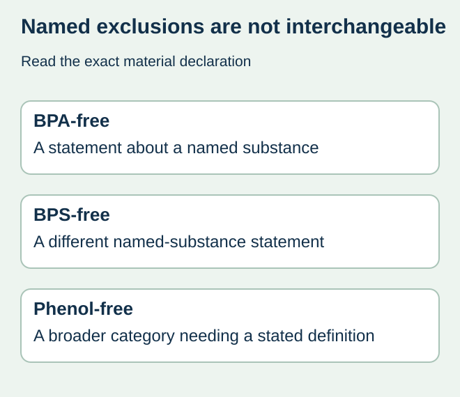
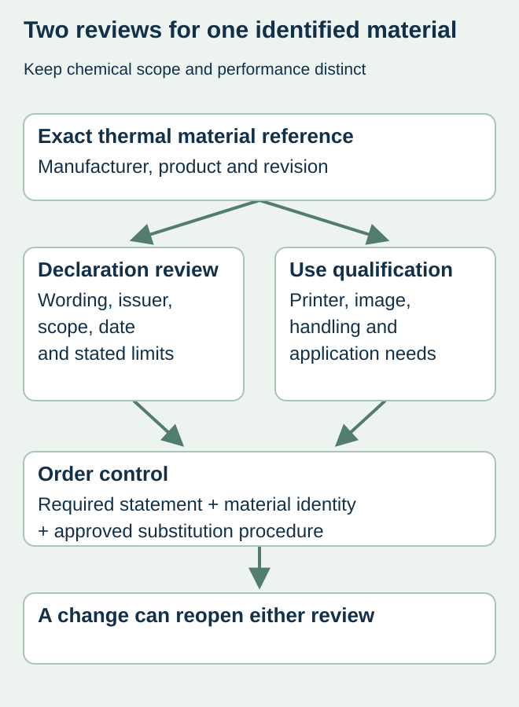

Two suppliers offer direct-thermal food labels. One says BPA-free, while another says phenol-free. Purchasing places the offers in one “chemical-free” category and compares price. That comparison has expanded the claims beyond what either phrase actually identifies.
Specify the actual required exclusion statement and obtain a declaration for the exact thermal material. BPA-free does not, by itself, say BPS-free or phenol-free. None of these phrases should become a general promise of harmlessness, food-contact suitability or compatibility with every printer.


Distinguish the named substances and scope
ECHA’s 2018 survey report notice documented substitution of BPA with BPS in thermal paper. That historical observation explains why excluding one named developer does not establish the absence of another. It is not current market-share evidence or a complete statement of today’s legal requirements. The responsible chemical or regulatory reviewer must assess the applicable market and use.
Ask the supplier what its exact wording means, which material reference it covers and how the statement is supported. If a declaration uses a threshold or analytical limit, retain it rather than rewriting the document as an absolute absence claim. Do not invent a common limit for all suppliers or jurisdictions.
Compare declarations before comparing quotations
| Specification field | Evidence to request | Do not infer |
|---|---|---|
| Exact material | Manufacturer/product reference and current revision | Every white thermal label has the same coating |
| Claim wording | Named excluded substances or defined broader category | BPA-free automatically covers BPS |
| Basis and limits | Declaration issuer, date, scope and stated limits | A marketing badge is a laboratory result |
| Intended use | Printer, food-contact arrangement and handling conditions | Chemical wording approves food contact |
| Change control | Replacement material and declaration-review route | An equivalent-looking face is equivalent evidence |
A declaration can be one input to the responsible review without being a complete compliance file. Keep adhesives, coatings, liner and other construction information available where the intended-use assessment requires it. A statement for a raw paper reference should not silently be attributed to an unidentified finished label construction.


Keep performance qualification separate
After the chemical specification is resolved, assess the actual printing and handling needs. Confirm the printer and settings, image durability requirements, application surface and storage sequence with the relevant suppliers. Changing thermal paper to satisfy a declaration can create a new performance qualification question even if the label dimensions stay unchanged.
For a hypothetical chilled-food operation, an acceptable chemical statement does not show that the printed date remains readable after its real handling cycle. Conversely, a readable date does not prove the chemical claim. Retain the material identity across both reviews so each conclusion refers to the same proposed item.
Control repeat orders and substitutions
Put the agreed material reference and required declaration wording in the purchasing record. Ask how a proposed replacement will be identified before supply. If a supplier changes material, obtain the new documentation and the appropriate performance review rather than accepting an old PDF because the product name is similar.
Use direct thermal versus thermal transfer for the separate printing-system decision, and food-contact document scope for construction assessment. This article compares specification language; it does not assess exposure, diagnose health risk or confirm any material’s regulatory status.
Discuss the unresolved label requirement
Send the required chemical statement, target market, exact material references offered, available declaration dates and the printer/use conditions. Confirm material availability and documentation scope with the proposed supplier. Prepare a label specification inquiry. The contact page opens an email draft and lists email or WhatsApp for attachments. Supply, proof options, testing, pricing and timing require project confirmation.